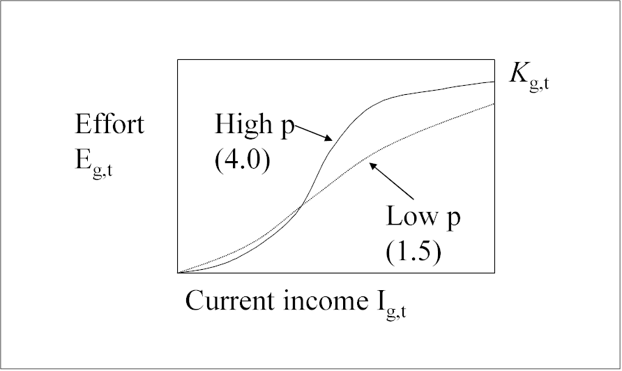

Ecosim users can choose to treat dynamics of fleet sizes and resulting fishing effort as unregulated and subject to fisher investment and operating decisions. The models are described in detail in the introductory material (Modelling effort dynamics) and are also described briefly here.
Users wishing to use the fleet/effort dynamics model should check the “fleet/effort response” box on the Ecosim parameters form. When this box is checked, Ecosim erases all previously entered time patterns for fishing efforts and fishing rates (e.g., from the sketch pad or from the time series data file), and replaces these with simulated values generated as each simulation proceeds.
In this model, there are two time scales of fisher response: (1) a short time response of fishing effort to potential income from fishing, and (2) a longer time investment/depreciation model for capital capacity. You need to set two parameters for the short time response model (‘Effort response power’ and ‘Initial effort/capital capacity’) and two for the longer time model (‘Capital depreciation rate’and ‘Initial capital growth rate’).
For each time step, the “fast” effort response for the next (monthly) time step is predicted by a sigmoid function of income per effort and current fleet capacity. For each gear, g, at each monthly timestep, t, Effort, Eg,t is the current amount of active, searching gear, i.e.,
where p and Ihg are fleet-specific response parameters, Kg,t is fleet capacity and Ig,t is income. Fleet capacity Kg,t is initialised using ‘Initial effort/capital capacity’ (see below) and is updated using the slow time response model (see next section).
Use ‘Effort response power’ to set the parameter p, which represents a “heterogeneity” parameter for fishers: high p values imply all fishers “see” income (I) opportunity similarly, while low p values imply fishers “turn on” their effort over a wide range of mean incomes (see figure).

This parameter is the ratio of initial fishing effort to fleet capacity (i.e., the proportion of maximum effort deployed in the first time step). It is used to set the initial fleet capacity Kg,1 as well as the income level needed for half the maximum effort to be deployed (Ihg).
Calculating Kg,1: For each fleet, initial fleet capacity K1 is calculated as the inverse of ‘Initial effort/capital capacity’ (initial effort is scaled to be 1 at Ecopath base condition), i.e., if ‘Initial effort/capital capacity’ is set at 0.5, then the fleet capacity will be set to 2 because half of the maximum effort is deployed. Kg,t is updated at each time step using the slow time response model.
Calculating Ihg: ‘Initial effort/capital capacity’ is also used to calculate Ihg. When the ratio is set at the 0.5 default value, Ihg is set to the initial income (summed over pools of Ecopath base catches x prices for each fleet).
For each fleet, slow effort responses are modelled as changes in fleet capacity (Kg,t), which is a function of the ‘Capital depreciation rate’, the ‘Capital growth rate’ and Profit (calculated dynamically in Ecosim). See Modelling effort dynamics for full description of the model.
Set the rate of capital depreciation here. Capital depreciation rates for fishing fleets are typically in the range 0.04 to 0.10 (equipment lasts 10-25 yrs), although will vary on a fleet by fleet basis.
Set the initial rate of annual capital growth here. A value of zero would represent a fleet with no growth (e.g., at bionomic equilibrium). For rapidly growing fleets, set the value at 0.5 or higher. If you have data on the maximum effort deployed for a number of years before and after the Ecopath base year, you can estimate this parameter empirically.